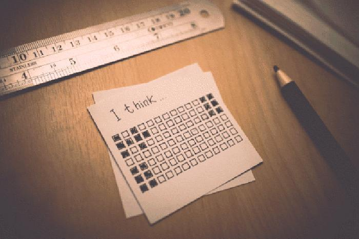

尽你所能，就没有失败者！
以下文章来源于摆渡人，作者摆渡人
你做我的朗读者，我做你的摆渡人。
你有你的朗读者 我是我的摆渡人
点击题目下方蓝字关注摆渡人

1
当你正穿着白色连衣裙、舔着冰激凌、吹着空调冷气时，有一群人正渐入愈加紧张的氛围里。一群祖国的花蕾长到十七、八岁，恰逢一个重要关口，能不能顺利通过这个关口，美好的花期是正要来临还是惨遭淘汰，牵动着每一位高考学子和家长的心。
在灰暗迷茫有点期待又十分紧张的考生看来，这是决定他们命运的时刻，成败在此一举。三年努力，无数个执笔奋战的夜晚，老师和家长的殷殷期盼，一朝成功即花开圆满，一旦落榜则会有负所有人的期待，别人的美好暑假看在眼里就会变得无比心酸，无比难过。
高考的重要性不言而喻，以至于许多人把高考失败和人生失败划上等于号，但漫漫人生几十年，高考成功就意味着人生成功，高考失败以后真的就不能过了吗？
非也。
其实，这个世界上有很多不可能是由“失败的人”创造的。
我所要说的，不是乔布斯，也不是创办了微软的比尔·盖茨，当然也不是亚洲首富李嘉诚。我不是要你退学，然后一夜之间变成首富或者什么领域的天才。我只是想让每一个曾经努力过但却不幸失败的人知道，这世界如此广阔，有太多太多的事情可以让你去开创、去奋斗。
在你小小的世界里，尽你所能的，好好生活，就没有失败者。
2
首先我要说的，是一个漫画编辑兼插画师，她叫六六。
从初中开始六六就迷上了画画，那时候她喜欢看《黑执事》，用课余时间画了很多里面的漫画人物，厚厚的一本素描本画满了塞巴斯蒂安和夏尔。一开始是临摹，后来开始自己想象笔下人物，创作许多人物和小故事。当然，没受过任何训练的她谈不上画艺精湛，但就凭着这样单纯的喜欢和热情，画的越来越好。她本想就这么继续画下去，可是上了高中之后课业越来越繁重，时间越来越紧，她也想过去做美术生，可是美术生的花费对于她的打工家庭来说无法承受，而且这所谓的艺术实在有太多的不确定性。
父亲斥责她：“你能靠当画家生活吗？”六六无法反驳，也给不出更好的回答。因为连她自己也知道，这点小小的喜好，在广阔的美术界，甚至那些美术生看来，微不足道，比九牛一毛还九牛一毛。
于是她理所当然的放下画笔，收起素描本，像每一个正常打工家庭的孩子一样，上课、学习，为高考努力。考上大学找到一份稳定的“坐办公室”的工作，不用去工厂，去务农，才是她的当务之急。那些艺术，都是有钱人家才能搞的玩意。
但高考成绩出来之后，六六落榜了。
可能在别人眼里也不算落榜，六六可以上三本的大学，可是三本大学的学费都很贵。她想了很久，后来打包行李去了本省的一所大专，学计算机。毕竟听起来，计算机是很有技术含量的东西，说不定以后能修电脑。
但一个偶然的机会，她在学校图书馆翻到了一本漫画杂志，估计并不是畅销的杂志，画的内容也不好。六六想：这种东西还能发表，连我都能画。
就这样一想，六六突然萌生了一个念头：她要把画画重新捡起来。
就算不能以此为生，人总也要为自己的梦想疯狂一次。
她上网找了很多画画的课程，还买了很多书，除了漫画书上的人物，她想到什么就画什么，甚至杯子鞋带，从最细小的地方观察，还在各种论坛微博上认识了许多漫画师。高中三年中断了的，六六都一一拿起，画画占满了她的课余时间。
后来慢慢开始在一些小杂志上发表了一些漫画作品，稿酬微乎其微，但她已经觉得很开心。甚至有一次她创作的一篇作品被一家销售量颇大的漫画杂志录用，拿了两百块的稿费，这是她拿过最多的稿费。
那一次，她幸福的不要不要的。
3
本来以为就这样画画，没想到临近毕业的时候，六六有了一个在一家漫画杂志实习的机会。虽然漫画杂志销量一般，但口碑不错。六六有过几次为他们画漫画，这次他们招实习生，六六抱着试试看的心态投了简历，没想到被录用了。
她本来临近毕业，以为要在电脑店当个维修小工，没想到一下可以去到自己梦寐以求的漫画杂志社工作。
六六毫不迟疑的去了。
实习生当然很辛苦，要做许多的杂事，可是能接触到漫画，能和从未见过面的编辑一起工作，六六已经很满足。她非常勤快，早上第一个到，晚上最后一个走，有空就会画画，三个月过后她被留了下来，成立正式的漫画编辑。不仅有了一份稳定的工作，还能继续画画。
她就这样一直努力着，工作时能接触到许多优秀的作品，工作之外她继续投稿，到现在已经发表了二百多幅漫画作品。而且最近，还接到一个作家的邀请，为她的新书画插画。
六六说：我没有想到高考失败之后，我还能靠近我的梦想。也许高考，没有想象中的那么可怕，考得过的人没有辜负自己的努力。而没有考过的人，也还有许多努力的可能性。只要你清楚自己的方向，尽其所能，人生就没有失败者。
我深以为然。
4
高考是一件很重要的事，也是必须认真对待的事。所以，很多人一旦高考失败了就觉得人生已难翻身，其实不然。
比高考失败更可怕的是，从此一蹶不振，再无奋斗前行的力量和勇气，若我们都有这份勇气，高考何惧，高考失利又何惧？
有一句话说：我们都不是神的孩子，所以我们要努力；
有一句话说：我们都不是富二代，没有高考，你拿什么拼得过富二代?
另一群人的话说：高考固然重要，可一旦失败，除了灰心难过之外，我们难道不更应该努力，更不应该放弃吗？难道高考失利的人，不是更应该坚强不息吗？他们没有当代大学生每天窝在寝室里打游戏的理由，没有在寝室玩手机玩到昏天暗地的借口。那些奋斗过一次就以为一劳永逸的人，在他们最灿烂的年华里，窝在窗帘紧闭的宿舍里，看着手机和电脑屏幕的光，一点点暗下去，本应该更积极生活的好时光，却和泡面游戏一起。
青春的光和手机的光一起，随着深夜、更深夜，逐渐暗淡下去。
而那些曾经失败过的人，不愿意就此继续失败下去，他们不让这失败扩张，他们比谁都更努力。四年过去，许多当初成功过的人一脚踏入了毕业即失业的恐慌大军，而曾经失利过的人早已爬起，并且已准备好向着更大更好的成功走去。
5
高考只有一次，需尽其所能。但人生不止一次高考，也请平常心对待。
赢过一次高考并不代表赢了一生，而输了高考也不代表输了一切，很久之后我们都才理解，“高考不是结束，是开始”这句话的真正含义。而那时，成功的人才是真正的成功，失败的人才是真的失败，是那种连青春都再也弥补不回来的失败。
每一个面临高考的你都没有懈怠的理由，不管结果如何，这场仗，打得赢最好，打不赢，人生也不会输。毕竟，人生有很多事和高考一样重要，甚至比高考更重要！
谨以此文，愿即将参加高考的学子都能以一颗坦坦荡荡的心，迎接即将到来的盛夏，也用这样一颗心，迎接人生的每一个盛夏。
ps：高考前都会有很多注意事项，大家都清楚。摆摆只想提一点，考试后，切！勿！对！答！案！
再PS：你还记得自己的高考分数吗？摆摆很想知道，有多少摆粉是学霸级的人物？